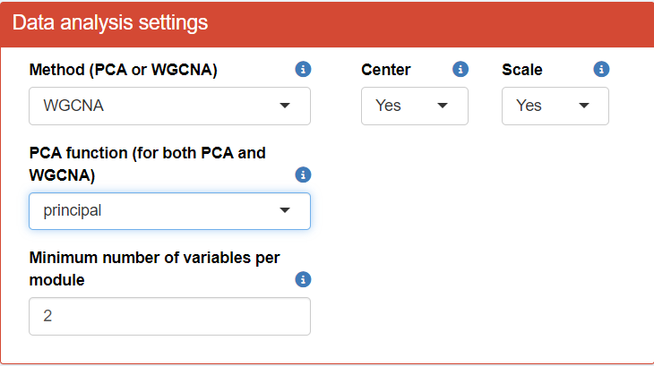
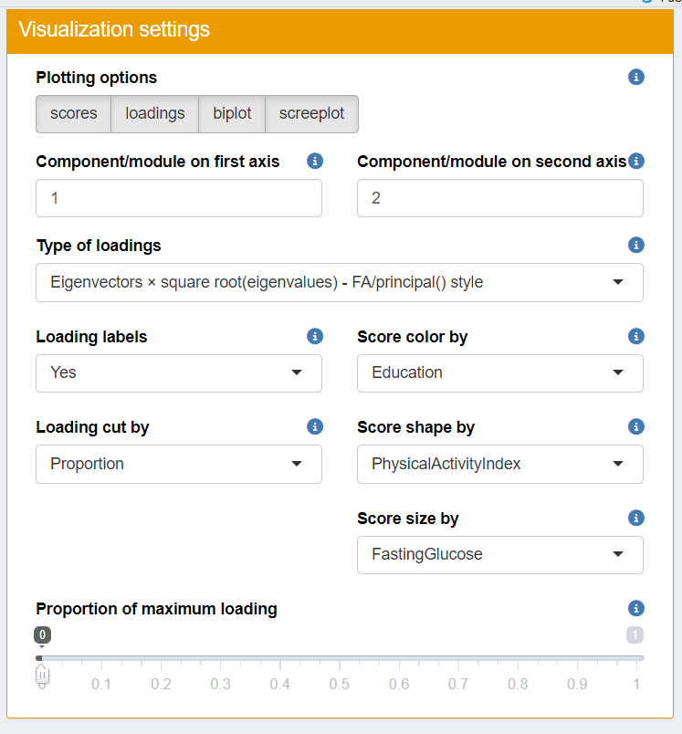

Before you begin, ensure that you have access to either the online version of TriplotGUI or can use TriplotGUI as a stand-alone application on your computer following Setup.
Data description
The datasets utilized in this tutorial can be downloaded here as data frames in the rds/rda/csv/xlsx files:
- Example2_exposure.rda
- Example2_Omics.rds
- Example2_outcome.rds
- Example2_covariate.csv
- Example2_auxiliary.xlsx
To demonstrate TriplotGUI’s versatility in handling various data formats, we’ve intentionally used a range of file types in this tutorial.
These datasets originate from HealthyNordicDiet_2, a synthetic dataset derived from the original HealthyNordicDiet data provided by the Triplot package (Schillemans et al., 2019). The HealthyNordicDiet dataset itself was simulated from a case-control study within the Swedish Västerbotten Intervention Programme cohort, exploring plasma metabolites reflecting healthy Nordic dietary patterns and their association with type 2 diabetes development (Shi et al. 2018).
Our selection of exposures, Omics data, outcomes, and covariates is based on the HealthyNordicDiet_2 data, as detailed in the accompanying code here. Below is a brief description of each dataset:
- Example2_exposure.rda: Contains 17 variables representing the dietary intake as measured by food frequency questionnaires (
"HFI"(Healthy Food Index),"BSDS"(the Baltic Sea Diet Score),"Wholegrains","Sausage","Pizza","Refined.bread","Fruits","Liquor","Wine","Hamburger","Poultry","Fish","Margarine","Cabbage","Carrot","low_fat_Dairy","Vegetables"). HFI is a categorical factor variable with 7 levels (0-6). All the other variables are continuous/numeric. - Example2_Omics.rds: Comprises 31 variables representing plasma metabolites predictive of BMI. All 31 variables are continuous/numeric.
- Example2_outcome.rds: Includes 3 variables:
-
"BMI": A continuous/numeric variable. -
"BMI_cat": A categorical factor variable with 4 levels: normal, overweight, obese, underweight -
"T2D": A binary factor variable, 1 for cases and 0 for controls.
-
- Example2_covariate.csv: Contains 5 variables that can be used as potential confounders:
-
"Gender": A binary factor variable with 2 levels: 1, 2. -
"Age": A continuous/numeric variable. -
"Education": A categorical factor variable with 4 levels: 1-4. -
"PhysicalActivityIndex": A categorical factor variable with 4 levels: 1-4. -
"Smoking": A categorical factor variable with 5 levels: 1-5.
-
- Example2_auxiliary.xlsx: Comprises 5 variables that can be used as potential confounders:
-
"PairedInfo": A character variable containing the pairing information of case-control matches for"T2D", with 500 levels: 1-500 -
"Energy": A continuous/numeric variable. -
"FastingGlucose": A continuous/numeric variable. -
"Education": A categorical character variable with 4 levels: 1-4. -
"PhysicalActivityIndex": A categorical character variable with 4 levels: 1-4.
-
All datasets are row-wise matched by observation and consist of a total of 1000 synthetic observations.
Reference
Shi, L., Brunius, C., Johansson, I., Bergdahl, I. A., Lindahl, B., Hanhineva, K., & Landberg, R. (2018). Plasma metabolites associated with healthy Nordic dietary indexes and risk of type 2 diabetes—a nested case-control study in a Swedish population. The American Journal of Clinical Nutrition, 108(3), 564-575. 10.1093/ajcn/nqy145
Schillemans T, Shi L, Liu X, Åkesson A, Landberg R, Brunius C. Visualization and Interpretation of Multivariate Associations with Disease Risk Markers and Disease Risk-The Triplot. Metabolites. 2019 Jul 6;9(7):133. doi: 10.3390/metabo9070133
Research question
We want to assess the relationship between diet, metabolic profiles and Type 2 diabetes and BMI. We assume that metabolites serves as mediators, mediating the effect of dietary exposures on Type 2 diabetes and BMI.
The use of interface
To demonstrate more functionality of the interface, we will provide an example on this page that corresponds to the code implementation outlined in the Code example of using TriplotGUI section. This will allow you to see how the interface operates in practical terms.
Step 1: Data reduction of Omics variables
To begin the analysis in TriplotGUI, first upload the Omics data (Example2_Omics.rds) and the auxiliary data (Example2_auxiliary.xlsx) using the interface in step 1. Once the Omics data is uploaded, a series of additional buttons will appear, allowing you to make modifications to either the Omics or auxiliary data if necessary.
Next, inspect the classes of variables in both datasets. You will find that the classes for the Omics data look correct; however, there are issues with the auxiliary data. Specifically, some categorical variables are incorrectly classified as character type instead of factor. To resolve this, change the class of these variables to factor, focusing on "PairedInfo", "Education", and "PhysicalActivityIndex".
{kind=link}
{kind=link}
To proceed with the analysis in TriplotGUI, adjust the “Data analysis settings” and “Visualization settings” according to the provided figure. In this example, we’ll employ the WGCNA (Weighted Gene Co-expression Network Analysis) method to obtain principal components/modules, while utilizing auxiliary data to generate more informative visualizations.
After configuring the settings, we can examine several informative plots at step 1.
 You can then play around the visualization panel on the right side and view all the plots (score, loadings, biplot, screeplot).
{kind=link}
- Scree Plot: Assess the variance explained by each cluster and the first principal component of each cluster.
- Score Plot: Visualize sample clustering and identify any outliers.
- Loadings Plot: Examine the contribution of each variable to the principal components.
- Biplot: Get a comprehensive view of how samples relate to each other alongside variable contributions.
Step 2-3: Exposures-Omics and Omics-Outcomes associations
After completing step 1, proceed to upload the exposures and covariate data in step 2 of the TriplotGUI interface.


Upon briefly inspecting the variable classes, you’ll notice some important details:
In the exposure data,
"HFI"(Healthy Food Index) is classified as a factor variable, while"BSDS"(Baltic Sea Food Index) is a numeric variable. While you may not need to change their classes at this point, being aware of these classifications is crucial for understanding how they’ll be treated in subsequent analysis steps.In the covariate data, you’ll observe a variable called
"X". This variable is likely an artifact of uploading the data from a CSV file, where the observation numbers may have been automatically generated as a new variable during the file import process. Since"X"is not an actual covariate, it should be removed from the dataset to prevent it from influencing your analysis.In the covariate data, when you inspect the classes of variables you will find that some categorical variables are incorrectly classified as numeric type instead of factor. To resolve this, change the class of these variables to factor, focusing on
"Gender","Education","Smoking"and"PhysicalActivityIndex".
Understanding these nuances in your data structure is essential for ensuring accurate analysis and interpretation of results. By addressing these points early in the process, you set the stage for a more robust and reliable analysis using TriplotGUI.
Change your “Data analysis settings” as shown in the figure below.

You can then briefly view the correlation coefficients in the “Visualizations” section by clicking Refresh plot.”

-
Select One-hot-encoding in Categorical variables transform categorical exposure variables (like
"HFI") with more than two classes into multiple binary variables. This process creates n binary variables for a categorical variable with n classes. The correlation coefficients between modules and these new binary variables are then calculated. However, One-hot-encoding is limited for meaningful use. The binary variables may be only meaningful when we want to compare one level to all the other levels together. We use this option for categorical variable"HFI"for demonstration purpose. Ideally, one should use Use Original for HFI.If Use Original is selected for Categorical variables, no transformation is made on the categorical exposure variables. In this case, linear models regressing modules on the
"HFI"variable are used for correlation analysis. The correlation coefficients are derived as the square root of the proportion of"HFI"’s sum of squares in the total sum of squares. For handling Missing values, TriplotGUI adopts the approaches from the cor package when dealing with continuous exposures. For more detailed information on these methods, refer to the documentation of the cor package.
In step 3 of the TriplotGUI interface, upload the outcome and covariate data. Upon inspecting the variable classes, you’ll notice:
In the outcome data,
"BMI"is classified as a numeric variable, while"BMI_cat"and"T2D"are factor variables.In the covariate data, you’ll observe a variable called
"X". This variable is likely an artifact of uploading the data from a CSV file, where the observation numbers may have been automatically generated as a new variable during the file import process. Since"X"is not an actual covariate, it should be removed from the dataset to prevent it from influencing your analysis.In the covariate data, when you inspect the classes of variables you will find that some categorical variables are incorrectly classified as numeric type instead of factor. To resolve this, change the class of these variables to factor, focusing on
"Gender","Education","Smoking"and"PhysicalActivityIndex".


Change your “Data analysis settings” and “Visulization settings” as shown in the figure below.

You can then briefly view the risk estimates in the “Visualizations” section by clicking Refresh plot.

When using TriplotGUI, the handling of categorical outcomes and pairing variables depends on your chosen settings:
- Without a pairing variable:
If not using multinomial regression, categorical outcomes with more than two classes are one-hot encoded into binary variables. Logistic regression is applied to binary outcomes (including those from one-hot encoding), while linear regression is used for continuous outcomes.
If using multinomial regression, it’s applied directly to categorical outcomes with more than two classes, producing n-1 estimates. Logistic regression is used for binary outcomes, and linear regression for continuous ones.
- When a pairing variable is provided:
Without multinomial regression, categorical outcomes are one-hot encoded. Conditional logistic regression is then applied to binary outcomes (including those from one-hot encoding), and linear mixed models are used for continuous outcomes, incorporating the pairing information.
With multinomial regression (as in our example), the pairing information is not used. Multinomial regression is applied to categorical outcomes, giving n-1 estimates. Logistic regression is used for binary outcomes, and linear regression for continuous ones.
Note that it is possible for users to skip Step 2 or 3, if their interests focus on only outcome associations or exposure correlations with Omics variables.
Step 4: Meet-in-the-middle Triplot Visualization

In the triplot visualization, black arrows represent loadings of Omics variables, forming patterns in different modules (axes). Blue circle points show exposure correlations with the modules, while red square points indicate outcome associations with the modules.
Note that we use first and second module for our example here. In reality, you may navigate to the “Comparative Visualization” tab in TriplotGUI’s interface already to view which modules may be more of your interest (that are associated with specific exposures and outcomes).
Based on the triplot visualization of the TriplotGUI interface, we can interpret the following key points:
The first (top right) and third (bottom left) dimension generally represents a spectrum of dietary healthiness. Healthier foods (e.g.,
"Fruits","Vegetables") and higher healthy food indices ("HFI","BSDS") are positioned on one side in the first dimension, while less healthy foods (e.g.,"Hamburger","Sausage","Margarine") are on the opposite side in the third dimension.The second (top left) and fourth (bottom right) dimensions are associated with health outcomes, including the numeric outcome
"BMI", binary outcome"T2D", and one-hot-encoded categorical"BMI_cat"outcome.-
Explanation for some variables in the plot:
-
"HFI"stands for healthy food index. A higher"HFI"suggests healthier diet."HFI"ranges from 0 to 6. You can see that there are HFI_0, HFI_1…HFI_6 in the figure and that is because"HFI"is used as a factor exposure variable in step 2 and is one-hot-encoded to the same number of binary variables as its number of levels. For example, HFI_6 is a binary variable where individuals with"HFI"as 6 (most healthy diet people) will be labeled as 1 and the rest of individuals will be labelled as 0. HFI_0 is a binary variable where individuals with"HFI"as 0 (most unhealthy diet people) will be labeled as 1 and the rest of individuals will be labelled as 0. HFI_1…HFI_5 has limited use since it only separates the group of people with certain"HFI"value from to the rest, which is a mixture of people with healthier and less healthier diet. -
"BSDS"stands for Baltic Sea Diet Score ranging. A higher"BSDS"suggests healthier diet."BSDS"is used as a numeric variable ranging from 2 to 25 in the correlation. -
BMI_cat_obese, BMI_cat_overweight, BMI_cat_underweight are the odds ratio generated from the multinomial regression, since
"BMI_cat"is a categorical outcome and multinomial regression is performed in step 3 in the interface in this example. Normal weight is uses as a reference and odds ratio of obese, overweight and underweight is produced. (Note that the first level of the factor variable is set as the default reference, in this case it is normal).
-
Adjusting for
"Age","Gender","Smoking","Education"and"FastingGlucose", the first module (on x-axis) correlates positively with generally healthy food (e.g."fruits","vegatables") and food index (e.g."BSDS") and negatively with unhealthy food (e.g."Hamburger","pizza"). It also reversely associated with"T2D"and"BMI". From the result from"BMI_cat", this components also reversely associated with being obese.Adjusting for
"Age","Gender","Smoking","Education"and"FastingGlucose", the second module (on y-axis) associated positively with generally healthy food (e.g."fruits","vegatables") and food index (e.g."BSDS") and negatively with unhealthy food (e.g."Hamburger","pizza"). However, the module correlates also positively with"T2D","BMI", obese, overweight and negatively associated with underweight.
Based on what we summarized above, the two modules may be associated with a overall healthy eating pattern. And in this healthy eating pattern, the first module is associated more with the beneficial effect on health and the second module represents the adverse health effect.
Step 5: Mediation analysis and visualization
In step 5 of the TriplotGUI interface, we focus on a specific set of variables for mediation analysis: we select "BSDS" (Baltic Sea Diet Score) and "Hamburger" as our exposures, "BMI" and "T2D" as outcome to enter our next step. We choose first and second modules as our mediators.
This time, we perform the mediation analysis using the counterfactual/potential outcome method, implemented through the mediation package in R on our exposures (i.e. "BSDS", "Hamburger"), mediators (i.e. the first and second modules) and outcome (i.e. "T2D", "BMI") of interest, adjusting for "Age", "Gender", "Smoking", "Education" and "FastingGlucose" for both exposure-mediator and mediator-outcome relationship.
In the counterfactual mediation analysis, contrast values of treatment and controls for each exposure needs to be specified. For each individual, the analysis considers what would happen if they received the treatment versus if they received the control. In brief, the algorithm uses these contrast values to calculate the potential outcomes under each scenario to estimate the direct and indirect effects. For a detailed explanation please refer to this paper of the mediation R package.
If an exposure variable is continuous (numeric variable), it is recommended that the treatment and control contrast values are chosen between the range of the exposure variable. If an exposure variable is categorical (factor variable), the treatment and control contrast values should be chosen from the levels of the exposure variable.
Use the following settings for your data analysis in TriplotGUI. Mediation analysis is then performed using the counterfactual method on the our selected exposures, mediators and our selected outcomes, adjusting for covariates for both exposure-mediator and mediator-outcome relationship.

- Note that you need to click Do mediation to start running the mediation analysis.
You can explore the “Visualization settings” to customize how your plot is displayed. Start by selecting to show only the proportion mediated (PM). This will help you focus on the mediation effects in your analysis.
Additionally, adjust the limits of the plot to enhance visibility. By fine-tuning these settings, you can ensure that the points representing your mediation results are more clearly visible, allowing for better interpretation and understanding of the data. Note that the confidence interval that beyond the limits of the plot will not be displayed on the plot.


Four green triangles are displayed on the figure. Their x and y coordiates represent the eight combinations of exposures, mediators and outcomes.
- exposure=BSDS, mediator= module 1, outcome=BMI
- exposure=BSDS, mediator= module 2, outcome=BMI
- exposure=Hamburger, mediator= module 1, outcome=BMI
- exposure=Hamburger, mediator= module 2, outcome=BMI
- exposure=BSDS, mediator= module 1, outcome=T2D
- exposure=BSDS, mediator= module 2, outcome=T2D
- exposure=Hamburger, mediator= module 1, outcome=T2D
- exposure=Hamburger, mediator= module 2, outcome=T2D
- Confidence intervals are automatically removed from the figure if they fall outside the set limits.
- In certain mediations, the direct and indirect effects may have opposite directions. This can result in a proportion mediated (PM) greater than 1. This occurs because the total effect might be smaller than the indirect effect.
Based on the figure showing the mediation analysis results, we can observe the direction and magnitude of proportion mediated for the 2 mediators (module 1 and 2), all the exposures and outcomes. Based on the confidence interval, we also observed that the PM for BSDS-module 1-BMI and BSDS-module 2-BMI mediation is significant.
To visualize the adjusted proportion mediated (APM) and add layers of correlation and risk estimates, use the following settings.


By observing this figure, we can see the direction and magnitude of adjusted proportion mediated (APM) for the two mediators across all exposures and outcomes. The positioning of the points is similar to what we observed for the proportion mediated (PM).
Notably, the APM for BSDS (Baltic Sea Diet Score) as the exposure and T2D (Type 2 Diabetes) as the outcome is smaller than their corresponding PM. This difference occurs because the indirect and direct effects for this mediation pathway are of similar size but in opposite directions. This opposition leads to a smaller total effect and consequently a larger PM. However, the APM is not affected by the directionality of the direct and indirect effects, providing a more stable measure of mediation.
No confidence intervals are shown for APM. This is because APM values cannot be directly calculated from the mediation analysis in the
mediationR package, unlike the proportion mediated (PM).The APM is always smaller than 1, even when direct and indirect effects are in opposite directions. This is due to the calculation method of APM, which uses the sum of the absolute values of indirect and direct effects as the denominator. \[APM=\frac{IE}{|IE|+|DE|}\cdot\frac{|IE+DE|}{IE+DE}=\frac{IE}{IE+DE}\cdot\frac{|IE+DE|}{|IE|+|DE|}=\frac{IE}{|IE|+|DE|}\cdot\frac{IE+DE}{|IE+DE|}\]
In step 5B of the TriplotGUI interface, you can view barplots that display the direct, indirect, and total effects for each exposure-mediator-outcome combination. These barplots offer a convenient visual tool to check the direction and magnitude of mediation estimates.

Based on the barplot and the triplot with mediation, we’ve observed significant proportion mediated for BSDS-module 1/2-BMI mediations. To further explore the indirect, direct, and total effects of different combinations of mediations, you can return to Step 5A in the TriplotGUI interface to run more mediation analysis.
Comparative Visualization
Users can examine the heatmaps of correlations, risk estimations, and mediation results in the TriplotGUI interface. To focus on specific aspects of interest, navigate to the “Visualization settings” section and remove unwanted mediators, exposures, or outcomes. This customization allows users to display only the correlation, risk estimation, and mediation results they find most relevant.


- Significance is indicated as follows. One star for p<0.05; Two stars for p<0.01; Three stars for p<0.001.
- The first two plots, correlation coefficients with exposures and risk estimates of outcomes will show all the exposure and outcome variables that are not removed from visualization.
- Note that only the selected exposures, mediators and outcomes that we use to do mediation on will show up in the mediation results. The rows in the heatmaps are mediators and the column represents exposure-outcome pairs. For each exposure-outcome pair, 4 results are shown: IE (indirect effect), TE (total effect), PM(Proportion Mediated) and APM(Adjusted Proportion Mediated). Please read Manual for more information. The “CF” before the names of exposures-outcome pairs means that this mediation is using the Counterfactual method.
Data download
Relevant data, intermediate results, can then be viewed and downloaded here in the interface.